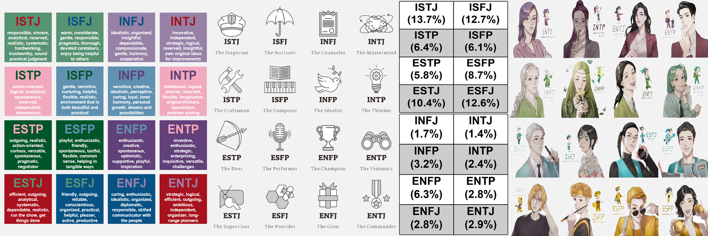
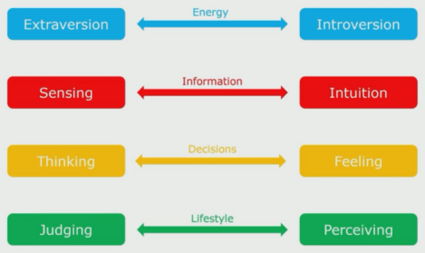
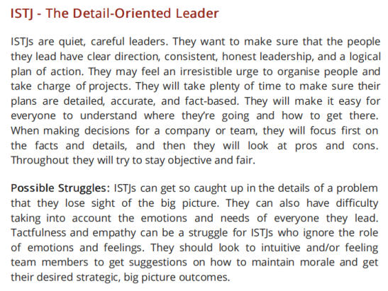
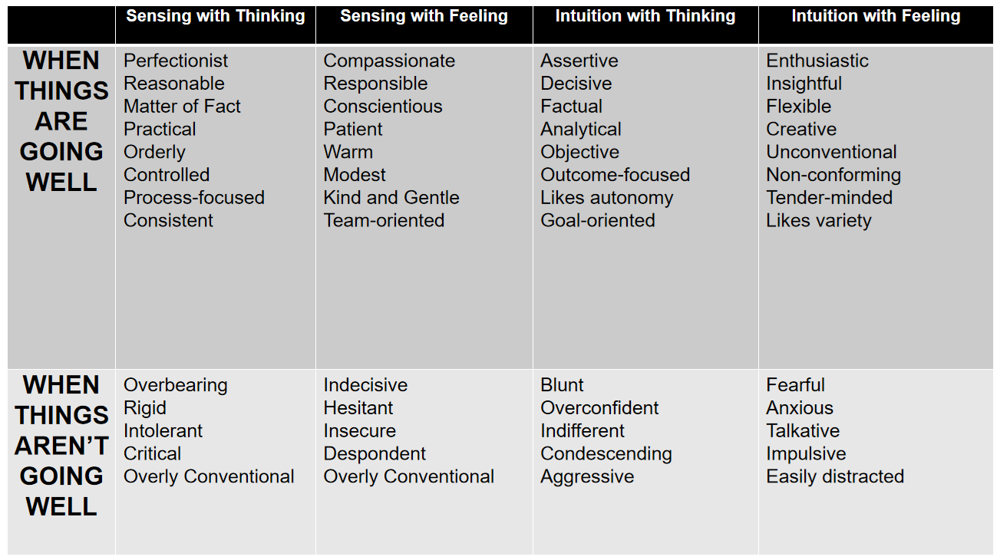

|  |
|---|
| Question | Answer | Question | Answer |
|---|---|---|---|
| At a social event, do you... | Interact with a few people known to you | Do new interactions with others... | Stimulate and energise you |
| Are you more... | Realistic | Are you more frequently... | A practical person |
| Are you usually... | Fair minded | Which are you drawn to? | Accurate perception |
| Do you tend to be more... | Dispassionate | Which is more satisfying? | To discuss an issue thoroughly |
| Do you prefer to work.. | To deadlines | Which rules you more? | Your head |
| Do you tend to make choices... | Rather carefully | Are you more more comfortable with work that is... | Done on a more casual basis |
| Are more interested in... | Facts | Do you prefer... | A few friends with longer contact |
| At social events, do you... | Stay late with increasing energy | Are you drawn more towards... | Substantial information |
| Are you more of a... | Sensible person | Are you more interested in... | Production |
| Are you drawn more towards... | Hard data | Are you more comfortable with being... | Objective |
| Is it more natural for you to be... | Nice to others | Do you value yourself to be more... | Devoted |
| When you meet people for the first time, are you... | Personal and engaging | Which statements are you most comfortable with? | Final statements |
| With regards to keeping an appointment, are you... | Punctual | Are you more comfortable... | After a decision has been made |
| Which bothers you more? Having things... | Incomplete | Do you... | Find little to say to strangers |
| With groups of friends, do you... | Get behind with the news | Are you more interested in... | A specific instance |
| Are you more interested in... | Concepts | Do you feel... | More creative than practical |
| Do you prefer writers to... | Use lots of analogies | Are you drawn more towards... | Fundamentals |
| Are you naturally more... | Compassionate | In making judgements, are you usually more... | Neutral |
| In making judgement, are you more like to be... | Impersonal | Do you consider yourself to be more... | Clear headed |
| Do you usually... | Settle things | Are you more inclined to... | Schedule events |
| Are you usually rather... | Quick to agree on a specific time | Are you a person who is more disposed to... | Work to a routine |
| When phoning someone, do you... | Rehearse what you are going to say | Are you more inclined to be... | Easy to approach |
| Facts... | Usually require interpretation | Do you have more fun with... | Hands on experience |
| Do you prefer to work with... | Practical information | With the written word, do you prefer it to be... | More literal |
| Are you inclined to be more... | Cool and level headed | Are you usually more... | Unbiased |
| Would you rather be... | More merciful than just | Are you typically more... | Lenient than just |
| Are you comfortable... | Setting a schedule | Are you more likely to... | Delay making judgments |
| Are you comfortable with... | Written agreements | Do you tend to be more... | Deliberate than spontaneous |
| In groups of people, do you... | Wait to be approached | Are you typically more a person of... | Clear reason |
| Traditional common sense is... | Usually trustworthy | Are you inclined to be more... | Fair minded |
| Children often don't... | Daydream enough | Mostly, is it preferable to... | Make sure that things are arranged |
| Are you usually more... | Tender hearted | Is it more in your nature to... | Get things settled |
| Are you more... | Gentle than firm | When the phone rings, do you... | Try to get to it first |
| Are you more inclined to want arrangements to be... | Well organized | What do you value most in yourself? | To have a good sense of reality |
| What do you value more? Something that is... | Definite | Do you prefer things to be... | Neat and orderly |
| |||
| To know more, view this ISTJ Report. | |||
| SECTION 1: UNDERSTANDING PERSONALITY TYPES AT WORK - COURSE INTRODUCTION |
|---|
| Introduction to Understanding Personality Types at Work |
| Knowing more about your unique personality can help you understand yourself better and make changes in your life that will make you more confident and successful.
Personality Types are really useful to help people understand themselves at a deeper level, to help them with their relationships, and to help with career decisions. Gives insights into communication skills, decision making, stress management, conflict resolution, and a whole host of other applications, so they really underpin the development of emotional intelligence. Carl Jung investigated Personality Types about 200 years ago, although his work was rather academic. A mother-daughter team Isabel Briggs Myers and Katharine Cook Briggs worked with his research, further refined it, and made it a whole lot more accessible for everyone. Personality Type assessment is based on their work and is now used throughout the world in many corporate organizations to help with leadership development and many of the other aspects. Myers-Brigss Type Indicator (MBTI) - we explore where people get their energy from, how people take in information, how they use this information to make decisions, and then how people work with this to structure and lead their lives 4 Preferences - combination of these makes up your personality type (each type has its own strengths and limitations)  Understanding how the preferences are expressed will give you insights into how your own strengths and limitations, and those of other people work. This will help you to understand how to engage with people better. |
| Activity Booklet: Reflecting about this Personality Course |
| Understanding more about personality will help you to predict how people will respond to certain situations and the sorts of things they prefer and value.
Understanding your personality and yourself better will help you gain greater insights into your behaviour and your emotional well-beings. Your personality is what makes you who you are. It is often thought of as something that arises from within the individual and remains fairly consistent throughout life. Personality encompasses all of the thoughts, behavior patterns and social attitudes that impact upon how you view yourself and what you believe about others and the world around you. Knowing more about your personality will help you to understand: Your strengths and weaknesses Your likes and dislikes Which situations allow you to perform at your best Other people better |
| The Challenges of Self-Awareness and Emotional Intelligence |

Self-Awareness - cornerstone of emotional intelligence If you are a leader/ coach working with others to help them reach their true potential, you may be surprised at the negative reactions that you encounter from time to time. Discovering your true authentic self can be a daunting task. Learning about yourself by increasing your self-awareness is often a difficult process and can be challenging for a variety of reasons. Human psyche is intricate and multifaceted - understanding your thoughts, emotions and motivations can be challenging due to the the intricacies and depth of the self. Can be a complex and nuanced process, and so lack of guidance around working with it can be an issue. Many people struggle to know where to start or how to navigate their inner world effectively. Fear of Self-Reflection - some people may have a fear of what they will discover about themselves Worries that they’ll uncover unpleasant truths or confront difficult emotions Experiences from the past can lead to emotional trauma that can make it harder for some to access certain parts of their psyche Defense Mechanisms - protect themselves from any uncomfortable thoughts and feelings Includes denial or rationalisation, and being overtly critical of others to place blame upon them Lack of Time, Motivation, & Prioritisation in our fast paced world, many people are constantly busy and may not prioritise self-awareness or self-reflection, feeling that they don’t have the time to engage in introspection External stimuli, such as technology, work demands and social media can be a more pleasant distraction Emotional Avoidance - some people have difficulty dealing with their emotions; they may suppress them or ignore their feelings rather than exploring them Ego and Self-Image - a strong ego or attachment to a particular self image can make it challenging to acknowledge and accept aspects of yourself that don’t align with that image Admitting flaws or vulnerabilities can be difficult for the ego Resistance to Change - some people may resist change even if it’s positive because they feel uncomfortable or it’s unfamiliar to them Cognitive Biases - such as confirmation bias, seeking information that confirms existing beliefs, or the Dunning-Kruger Effect overestimating one’s abilities, can distort self-perception and hinder self-awareness Overcoming these challenges often requires patience, practice, and willingness to engage in self exploration |
| Working with Personality Types |
| Personality
The combination of characteristics or qualities that form an individual’s distinctive character. - The Oxford English Dictionary Refers to individual differences in characteristic patterns of thinking, feeling and behaviour. - Encyclopedia of Psychology Little bit broader than behaviour and includes interests, values, attitudes and temperament Understanding your own and other’s personality can be a vital first step in acknowledging differences and working through these challenges. MBTI (Myers-Briggs Type Indicator) This personal and behavioural framework that we’ll be investigating was developed originally by Carl Jung. Most widely used framework across the world. Positive, universal language and framework Differences can be explored in a positive manner Easy to understand but has depth for continued exploration Wide range of applications The way in which it should be used is to enhance the awareness of the impact of preferences on others, as well as understanding strengths and blind spots. It can be used in individual team and organisational applications, so it can be very useful in working with and developing teams. Has a good place in leadership development by enabling leaders to be able to understand, flex and adapt their style according to the needs of the individuals that they’re working with. Emphasizes the value of true leadership and can be applied across a whole range of leadership challenges. |
| Learning Outcomes of the Course |
| Explores behavioural preferences of your own and how they differ from the behavioural preferences of other people.
Assess your own Personality Type and what this means in both your private and professional life Describe different approaches in people relating to: where attention is focused, how information is absorbed and processed, how decisions are made and lifestyle orientation Recognise ways to appreciate, value, and work more effectively with all sixteen personality types Discover how to build deeper relationships through common understanding and improved communication Recognise why conflict may arise and ways to resolve this Evaluate opportunities for personal development Identify applications in team building, communication, change, decision making and problem solving |
| Personality Type Indicator to Help you Assess your Type |
| To determine where you like to focus your attention (E or I), the way you like to look at things (S or N), the way you go about deciding things (T or F), and how you deal with the outer world (J or P).
The questionnaire is based on a personality framework that will help you explore your preferences. There are no right and wrong answers and all possible outcomes on the questionnaire are equally valid. The questionnaire will take you about 25 minutes to complete; however, there is no time limit so you will be able to take as much time as you need. Try to answer the questions according to your natural preference. Think of yourself in a situation where there are no external pressures to act or feel in a particular way. Get yourself into a frame of mind in which you are able to make a free choice between the response options. |
| SECTION 2: EXPLORING THE FOUR PREFERENCES |
|---|
| Exploring the Four Behavioural Preferences |
| Carl Jung’s theory of psychological type is well known, well established, but it’s quite academic.
Jung’s work was refined and developed by Katherine Briggs and Isabel Myers, who actually helped to bring it into the public domain and to make it more applicable. It has over 70 years of research and it helps with self awareness and confirming self perception. Behavioral Preferences Increases self-awareness and confirms self-perception Discover normal differences in self and others concerning Life orientation Where energy is derived How information is acquired How decisions are made How engagement occurs in the world Helps appreciation of strengths in self and others Helps understanding of personality differences in others and how to use them constructively Relates to key leadership tasks and challenges - teams, strategy, conflict, motivation, etc Cannot measure Cognitive ability (IQ) Psychiatric disturbances Mental illness Maturity Affluence Emotions Trauma Stress Type is useful in understanding yourself and other people - EVERYONE IS AN INDIVIDUAL You decide how ACCURATE the assessment is for you. Jungian-Based Preferences Looks at some of your key - but not ALL of them Preferences Characteristics Tendencies Four Preference Scales How you get your energy - Extraversion/Introversion How you gather information - Sensing/Intuition How you process information - Thinking/Feeling How you engage with the world - Judgement/Perception When you behave in a non-preferred way, it’s unnatural, it’s difficult, it’s awkward, and it takes more energy. |
| Assessing and Determining your Personality Type |
| You can compare your Self-Assessed Type with your Self-Reported Type
If there are similarities, then you’ll have a good indication of your type. 
|
| Where You Get Your Energy From - Extraversion and Introversion (complementary attitude towards the world) |
| Extrovert - somebody who’s quite loud, engaging, talks to a lot of people, and is usually the life and soul of the party
Extraversion Preference - stimulation is from the environment = the outer world of people and things Introvert - quite shy and boring Introversion Preference - stimulation is from within = the inner world of thoughts and reflections Both attitudes are used by everyone, but one is usually preferred and better developed |
| How You Take in Information - Sensing and Intuition (ways of taking in information) |
| Sensing Preference - takes in information by way of the five senses = sight, sound, taste, touch and smell
Intuition Preference - processes information by way of a “sixth sense” or hunch Both attitudes are used by everyone, but one is usually preferred and better developed |
| How You Process Information - Thinking and Feeling (ways of making decisions) |
| Thinking Preference - decides on the basis of logic and objective considerations
Feeling Preference - decides on the basis of personal, subjective values Both attitudes are used by everyone, but one is usually preferred and better developed |
| How You Organise Your Life - Judging and Perceiving (complimentary lifestyles) |
| Judging Preference - lifestyle is decisive, planned and orderly
Perceiving Preference - lifestyle is flexible, adaptable and spontaneous Both attitudes are used by everyone, but one is usually preferred and better developed |
| Assessing Your Type with Some Hints and Tips When Working with Type |
| Each preference is allocated a letter. The letters build up into one of 16 Types.
Type Table - considers the proportions of each type within a general Western population Understanding of type… Helps you to make better sense of who you are in the world It helps you to learn about yourself It helps with your understanding of where you fit in a framework that describes personality differences in positive and constructive ways Helps you to appreciate differences between people - important differences - and understand how different types can work together in complementary ways Helps you to apply this knowledge to: Value diversity Improve working relationships Develop your leadership style Improve communication Improve problem-solving strategies Help manage change Why is it important to consider behavioural preferences? And why is it important to consider working with Type? Self-awareness = strengths and blind spots Personal and professional development = maximising your potential Understanding others = appreciating the other side, gifts differing Relationship building = communication, teamwork Can be used in any situation in which you need to understand yourself and understand other people. Rules about working with Type Life tends to support our preferences, making us even more distrustful of our non-preferences Any strength overplayed becomes a liability- Type is only a theory; it takes real life to validate it Type is only an explanation; never an excuse The whole is greater than the sum of its parts- Type is only one lens through which to view human personality To be effective, type must begin with yourself before you can apply it to others Type is easier said (or thought about) than done (to work with) Don’t blame everything on your opposite type Type can’t solve everything |
| SECTION 3: FURTHER INFORMATION TO HELP YOU UNDERSTAND PERSONALITY TYPES |
|---|
| Putting People Into Boxes - Can Type Be Accused of This? |
| A reminder that much of other people’s apparently annoying behaviour is not necessarily attributable to they’re doing those things on purpose, but because their minds, possibly also their brains function differently.
Working with Type is often criticised for putting people in boxes This is one of the problems that can emerge with personality tests. Labels can be applied to people that limit their ability to do things that fall outside of their Type Preferences People can be boxed in and refused to be let out Remember that we can use all of the preferences, some are better developed and easier to use than others We adapt the use of our preferences according to a variety of factors and so effectively can become any type Your best fit type is the type that you are most comfortable with - you can relax and be yourself By applying a framework to our knowledge of preferences and type, it becomes easier to recognise patterns and groupings A good practitioner is not looking to place people into a box by any means, but to use this as a starting point to explore how the preferences and how behaviours are expressed |
| Some Ways of Taking Type Further |
| Work with a qualified Type practitioner
Consider getting everyone in your team involved Explore type more deeply Step I The functional pairs - give so much about how we function in life Forms the middle two letters of each person’s four letter type and define how we prefer to gather information and make decisions - our core mental properties Quite useful in looking at communication patterns, group decision making, and team culture Correlation with other psychological models such as Social Interaction Styles and DISC ST - decisive, quick to take action, value facts and logic, and pay attention to details; Aligned with the analytical style or High Compliance SF - service minded; seek to help people in very practical ways and are unselfish, kind, and understanding; Aligned with the amiable style or High Steadiness NF - Guided by their passions and beliefs; they have sixth sense about people and work to ensure harmony in the workplace; Aligned with the expressive style or High Influence NT - agents of change; they have vision and value logical arguments, competence and independence; Aligned with the driver style or High Dominance At the core of each Type are the four mental processes Sensing and Intuition - how you perceived the world Thinking and Feeling - how you make judgments Type dynamics - pinpoints each type’s favourite or dominant process, critical for understanding intrinsic motivation and approaches to problem solving Clarifies how Extraversion / Introversion is used and identifies which process is typically used in interacting with others, adding insight to communication issues Understanding the order of development and the interaction of Type preferences make whole Type descriptions far more powerful than just knowing your individual preferences Your four letters are the shorthand to describe the interaction of your personality preferences, which ones you naturally use first and which you use best - those that you trust the most and use without conscious thought One of those four letters is the most developed preference and has the most influence on you - aka Dominant Function, your favorite function, the one that you rely on and trust over others This part of your personality is inborn and developed first when you were a child and this is why you might not be all that conscious of your Dominant Function. It’s so elemental to who you are that you may simple be unaware of its presence and impact. It has the most important role and you usually develop the most skill with it. Extroverts - use their Dominant Function in the outer world because they prefer to live in the outer world If the final letter in your type is a P, then your Dominant Function will be the N or S in your four letters If the final letter in your type is a J, then your T or F will be your Dominant Function Introverts - use their Dominant Function in their inner world because, they prefer to live in their inner world If the final letter in your type is a P, then your Dominant Function will be a T or F If the final letter in your type is a J, then your Dominant Function will be a S or N There is an order of preference with the Dominant being the most important, followed by Auxiliary, Tertiary, and Inferior Functions Our most preferred personality preferences, our Dominant and Auxiliary Functions, will always be at the core of our personality. Step II More empiric assessment that explores each of the four preference scales further, looking at five further sub scales each More in-depth assessment that will really help you to understand yourself better by identifying your unique set of preferences Helps to understand the differences between others who share your Type and will clear up any confusion you may have about any of the scale Step III Very new and helps you to understand your competencies looking at opportunities at what works well for you and what doesn’t |
| Addressing Some Inappropriate Criticisms About Type |
| Myers-Briggs Type Indicator often gets a lot of negative criticisms
Many critics don’t really understand what the MBTI is or how to use it Bland statements that the tool is useless or it’s not scientifically validated are not true, and sceptics are not able to provide the evidence to substantiate these claims Open to scrutiny and to peer review like any scientifically assessed instruments Critics claim that a personality assessment is valid if it predicts outcomes that matter, and if it’s going to be used in an organisation it should shed light on how well someone performs in a particular job or with a certain group of people There are many human resources tools that are used for a wide range of purposes within an organisation. Some are being used for recruiting and assessment, whilst others are used to strengthen the mutual understanding between people and to allow them to communicate better with each other in a non-threatening way The Center for Applications of Psychological Type has always stated that the MBTI should not be used for recruiting and evaluating job performance Critics often mistake preference with aptitude. For example, if you have a preference for logical thinking, it doesn’t necessarily mean that you’re good at it. The results that you get from your type assessment don’t imply excellence, competence or natural ability, only what is preferred Using Type supports a coaching process to help people gain an understanding of their preferences and how to use them. Step I is very valuable in this way, and Step II is much more empirical. It tends to be completely overlooked by critics |
| Your Personality Type and Leadership Style |
| Each personality type has a unique way of leading that is all their own
Some types are given more opportunities to lead than other, and other types lead in the background by making suggestions and subtly manoeuvring situations to their rightful course Any personality type can be an effective leader. Every type is going to do it a little bit differently.  |
| More About the Functional Pairs - The Mental Functions |
| “Anyone can become angry - that is easy. But to be angry with the right person, to the right degree, at the right time, for the right purpose and in the right way - that is not easy.“ - Aristotle
Anyone can take a dislike to something - that’ easy. But to be helpful to other people you need to explain why you dislike something and what you would like to see to make it better. This is a good use of emotional intelligence. Relating to types, at the core of type are the basic interactions of how information is processed and responded to The basic interactions of our preferred perceiving functions - how we take in information is Sensing and Intuition; and our judging functions - how we analyse and process information - is Thinking and Feeling When all other expressions of the preferences fade, the habits of the mind are a result of the interactions of the mental functions - our core cognitive processes (ST, SF, NT, NF) - these provide a strong foundation for understanding each Type’s view of the world Your preferences will drive your behaviour, it will drive your thinking and will drive the expression of your thinking, and this is what people will see and hear from you Basic descriptions of the typical qualities of the Type’s mental functions - their cognitive processes  Being aware of your own mental functioning is not easy and it’s hard work. Recognising how this fits with your Type and the Type of others helps It takes courage to own the habits of your mind and recognise your limitations, and it take tremendous energy to stretch beyond these habits to fulfil your potential This courage and energy is part of your emotional intelligence - available to all, but accessed by few |
| Further Resources Around Type |
| Rob Toomey and his team at TypeCoach have a range of materials and resources dedicated to support learning around Type. Much of this is free
Access a range of low cost materials Use the TypeCoach Verifier Use the Type-to-Type online tool - determine the most important tips for interacting with any person by taking into account, not just their personality type, but yours and the unique dynamic between your two Types Can use this to keep track of the personality Types of your colleagues or clients and to quickly see the Type distribution of your team Materials include using Type to manage stress, support, change, and transformation, tailor your approach to feedback, tailor your approach to sales, assist in coaching, build trust, manage conflict, support prioritisation, and time management You can also become qualified in Type by becoming certified to become a Type Practitioner and even a Master Practitioner and much, much more. Develop Your Emotional Intelligence E-book |
| Relatable Articles |
|---|
| 16 Personalities
How the Myers-Briggs Type Indicator Works Myers-Briggs Personality Types Myers-Briggs Type Indicator (MBTI): 16 Personality Types The TypeFinder® Personality Test |